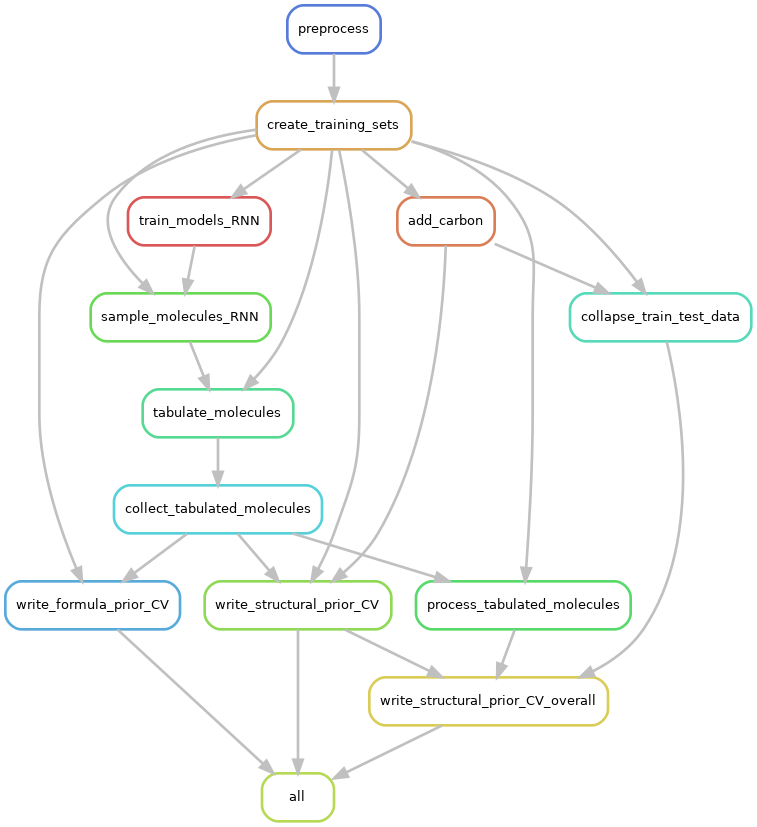

Snakemake workflow
The included Snakefile provides a way to run the end-end workflow for the
clm repository.
The following “rulegraph” illustrates the unique steps in the workflow that would be run, and their order of execution. (note that the evaluation and figure-generation steps have been omitted from this graph for clarity).

Note that the actual number of jobs will exceed the number of rules above, since many different instances of the rules will be run for any given dataset, depending on the number of train/test folds, the number of independent seeds against which to run the models etc.
The following dependency graph illustrates the particular instances of the steps that would be run, when
running the workflow for a single enum_factor, 3 folds, 2 training seeds, and 1 sampling seed.
(This is the starter configuration provided in the file config_fast.yaml).

Testing the workflow
To run this workflow on a tiny dataset provided with clm:
Steps
cdto theworkflow/folder. In the activated environment, run the following command to see the steps (including the actual commands) that will be run:
cd CLM/workflow
snakemake --configfile config/config_fast.yaml --jobs 1 --dry-run -p
Repeat the command without the
--dry-run -pto execute the workflow. The end-end workflow should take around 5 minutes on computers wheretorchhas access to a gpu, or 20-25 minutes otherwise.
Note that the configuration provided in config_fast.yaml, as well as the truncated datasets that it uses by default, are purely for software testing purposes, and generate results/graphs that are not interpretable. To run the actual workflow on your dataset, read on.
Running the “real” workflow
To run the end-end workflow on an actual dataset (preferably on a cluster), repeat the above process, but with a few tweaks:
Steps
a. Specify the paths to your dataset (a .txt file containing SMILES in each line, or a .txt file in csv format with a smiles column and any other additional columns), as well as the PubChem dataset for model evaluation purposes, as --config parameters on the command line. Note that the PubChem dataset used for clm
has undergone a time-intensive preprocessing. This dataset (~6Gb) is available on the argo cluster at /Genomics/skinniderlab/food-clm/PubChem.tsv
b. Add the --slurm flag to indicate that the steps should be run using sbatch.
c. Replace --configfile config/config_fast.yaml with --configfile config/config.yaml (or eliminate this flag altogether).
d. Make any other configuration changes in config.yaml (network architecture, number of epochs, other hyperparameters).
e. Increase the value of the --jobs flag to specify the maximum number of concurrent slurm jobs running at any given time.
For example, run the following command to see the steps (including the actual commands) that will be run:
snakemake --config dataset=/path/to/dataset.txt pubchem_tsv_file=/path/to/PubChem.tsv --jobs 10 --dry-run -p
Replace /path/to/dataset.txt and /path/to/PubChem.tsv with the paths to your dataset file and PubChem tsv file respectively. These will override the
values obtained for these flags in config.yaml. Alternately, you can change config.yaml directly to point to the correct paths.
Repeat the command without the --dry-run -p to execute the workflow. The end-end workflow should take around 24 hours, depending on the cluster workload and the exact configuration in config.json.
snakemake --config dataset=/path/to/dataset.txt pubchem_tsv_file=/path/to/PubChem.tsv --jobs 10 &
Note that running
snakemakein a foreground process will run the workflow in blocking mode. Though actual jobs will be submitted to compute nodes, pressing Ctrl-C will causesnakemaketo attempt to cancel pending/currently running jobs (throughscancel). You should thus run the actual workflow in the background using&, or use an environment like tmux that you can attach to and detach from on demand.
Other useful commands
To generate the Rule graph that you see above:
snakemake --configfile .. --forceall --rulegraph | dot -Tpng > rulegraph.png
To generate the DAG dependency graph that you see above:
snakemake --configfile .. --forceall --dag | dot -Tpng > dag.png